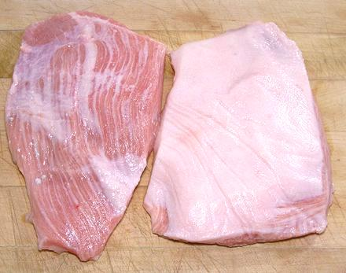

Pork Jowl Meat

This is cut is from the jowl, with most of the fat removed - but not all
the fat. The jowl is below the cheek, which is right behind the jaw and
contains a big lump of very tough meat. The jowl contains a thin layer
of much more tender meat, and this cut is trimmed to the thickness of
that meat layer at its thickest.
This is quite different from the more familiar cured products - the
Hog Jowl Bacon of North America and the Guanciale of Italy. Both of
those use the full thickness of the jowl, which is mostly fat. For those
products see our Pork Products page.
The photo specimens were about half an inch thick, the largest
was 6-3/4 x 5-1/2 inches and wighed 9-7/8 ounces. The photo shows both
sides. The meat layer is not even so the constant thickness cut is
nearly ll meat on one edge, and tapers to nearly all fat on the opposite
edge.
More on Cuts of Pork.
Buying:
This is a very uncommon cut here in Southern
California. I purchased it from an Asian market in Alhambra, a market
that carries a lot of cuts of meat unfamiliar to Americans.
Cooking:
Use any method commonly used for fatty pig
parts. This cut would probably be good for grinding into sausage, which
requires a lot of fat. I lightly fried 1 pound 10 ounces of slabs of
this meat. After frying, I found it was very easy to slice away the
fat down to a very thin layer. This left 1 pound 2-1/2 ounces, for a
yield of 71%.
The fat, of course, can be very easily rendered into useful lard.
Do not fear the lard, it is far less dangerous than the deadly trans
fats the AHA urged you to use instead, and you survived those (we hope).
It tastes a lot better than trans fats too - for details see our
Lard page.
ap_jowlmz 190909 - www.clovegarden.com
©Andrew Grygus - agryg@clovegaden.com - Photos on this
page not otherwise credited are © cg1 -
Linking to and non-commercial use of this page permitted